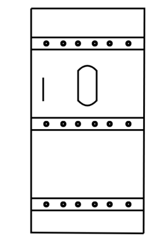
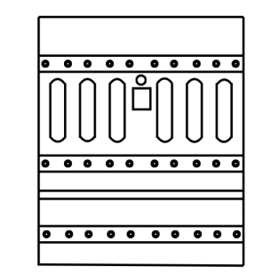
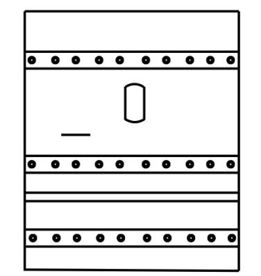
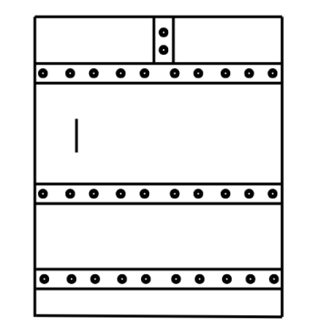

Schéma ©Les blockhaus lyssois.
La porte de type A est une porte blindée présente sur les blockhaus français. Elle dispose d’un créneau pour FM 24/29 permettant d’assurer un tir direct sur l’ennemi.

Schéma ©Les blockhaus lyssois.
La porte de type B est utilisée dans plusieurs types de blockhaus français (N1f, N2f, N1d/g, N2d/g). Elle est composée de deux parties afin de faciliter l’évacuation du bloc.

Schéma ©Les blockhaus lyssois.
La porte de type C est une porte blindée équipée d’un créneau de tir pour fusil-mitrailleur, en plus de son système en deux parties pour l’évacuation.

Schéma ©Les blockhaus lyssois.
La porte de type D est conçue pour le passage du matériel dans le blockhaus. Elle est destinée à la logistique et non au combat.
Sources : Les blockhaus lyssois